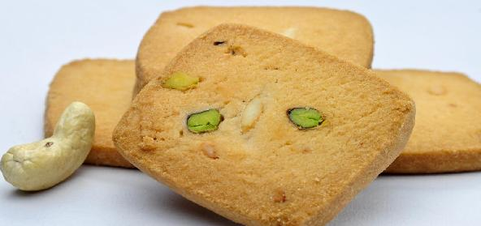

Ingredients
1.All purpose flour (Maida) - 2 cups
2.Butter/Ghee - 3/4 cup (at room temp.)
3.Chilly powder - 1 tsp
4.Ginger - 1" piece (minced)
5.Cumin seeds - 1 tsp
6.Green/Dry red Chillies - 1 or 2 (minced)
7.Curry leaves - 2 strands (minced)
8.Baking Soda - 1/2 tsp
9.Asaefoetida - a pinch
10.Salt - 1/2 tsp ( or to taste)
11.Sugar - 2 tsp
Method
1. Mix all the above ingredients together in a bowl to get a nice dough like chappatti dough.
2. If the dough is not moist enough add 2-3 tblsp of curd.
3. Grease an aluminium foil and roll out the dough into a big circle 1 "thick.
4. Using a cookie cutter or any bottle lid, cut out into desired cookie shapes.
5. Place the cut out cookies on a greased baking dish and bake it for 15 - 20 minutes in an oven preheated to 325 degrees F.
6. Cool and store in air tight containers and enjoy for many days.